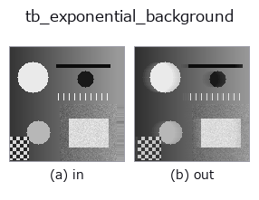
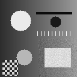

typed op• 資料種類:video → video
• 呼叫:fullseye.apply(img, "tb_exponential_background", a=0.5, b=0.5)(2-D 的模型是一張圖 + 兩個純量旋鈕 a,b∈[0,1])

*圖為在 128×128 合成輸入上實際執行的輸出。左為輸入，右為輸出。點雲以俯視散點顯示(亮度 = z)，一維序列為折線，體資料為沿 z 的最大值投影，影片為中間影格，複數影像為振幅；無法成像的回傳值直接顯示數值。*
掃描旋鈕 a(0.1 / 0.5 / 0.9，另一旋鈕取預設):
▸ tb_exponential_background: knob a sweep (docs site)
*旋鈕 b 不改變輸出(實測: 0.1 / 0.5 / 0.9 相同)。*
階段(前置運算子 → 本運算子，由左至右):
▸ tb_exponential_background: stages (docs site)
換別的影像(合成場景 / 照片 / 硬幣。上排為輸入，下排為對應輸出。旋鈕取預設):
▸ tb_exponential_background: other inputs (docs site)
動態(GIF: 依序顯示影格 / 視點 / 切片。靜態圖是完整版，GIF 為輔助):

逐幀遞迴背景 `bg ← (1−α)·bg + α·frame → (T, H, W)（video`）。
> 以下的詳細說明為原文 —— 摘要與標題已翻譯。
最初のフレームで `bg を初期化し、以後 bg += α (frame - bg)` を画素ごとに
繰り返す指数移動平均。状態は背景 1 枚だけ(窓を持たない)。フレーム `t` の
出力はその時点の `bg の写しで、t = 0` は入力の先頭フレームそのもの。
• `video: (T, H, W)` 配列か 2-D フレームの list。整数 dtype は最大値で
`[0, 1] に正規化、float は [0, 1] にクリップ。NaN/Inf は ValueError`。
• `alpha: [0, 1]。時定数はおよそ 1/α` フレーム(0.05 → 約 20 枚)。
0 なら背景は先頭フレームのまま固定、1 なら常に現在のフレーム。
**物体が止まると `1/α` 枚ほどで背景に吸収される**(選択的更新は無い)。
• 返り値: `(T, H, W) float64、[0, 1]`。
• 失敗: `ValueError(形・dtype・alpha` の範囲)。
前景マスクまで欲しいなら同じモデルの `exponential_foreground`。画素ごとの
雑音に閾値を合わせたいなら `running_gaussian_background`。
2-D 進化レジストリへ橋渡しした videostream の op `exponential_background。実装は同じで、呼び出し規約だけ op(v, a, b) に合わせてある。a が alpha(既定 0.05)を振る。b` は未使用。
• 範例資料目錄(下載 URL / 授權) —— 2-D 用 skimage.data(BSD/公有領域)加合成圖,3-D 給出真實資料源(Stanford/PDS 等)的下載 URL。
• 運算子來歷與參考文獻 —— 該運算子族所依據的研究/方法出處。
下面的程式已確認可以執行(與圖相同的輸入)。在 Studio 說明中，此區塊會變成按鈕，可當場載入並執行。
img_to_video 0.50 0.50 tb_exponential_background 0.50 0.50
▸ Load this pipeline · Load & run
下面的範例呼叫的是底層帳本運算子 exponential_background。此橋接運算子只是把同一實作適配為 fn(v, a, b) 慣例，行為完全相同(只是呼叫形式不同)。
• video_streaming — py -3.11 examples/video_streaming.py
video 作為輸入)identity · tb_temporal_bandpass · tb_temporal_band_power · tb_temporal_median_window · tb_moving_average_window · tb_background_subtraction_window · tb_frame_difference_causal · tb_exponential_foreground
typed)tb_points_to_voxel · tb_estimate_point_normals · tb_iss_keypoints · tb_project_points · tb_render_point_depth · tb_statistical_outlier_removal · tb_radius_outlier_removal · tb_voxel_grid_downsample
*Provenance: ops.py — 2D 運算子登記表。本條目由 tools/opdocs.py md 自動產生(請勿手動編輯)。*
© 2026 Kazufumi Furuse — Fullseye operator documentation. Licensed under Apache-2.0.
{kind=link}
{kind=link}
{kind=link}